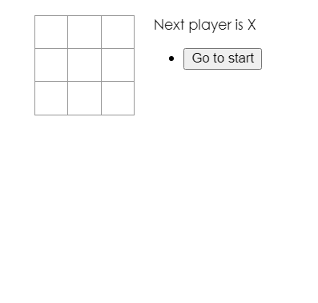

為了釐清思路，費了一番功夫呀。
簡述 繼上一篇 想用 React 做出五子棋嗎？先從圈圈叉叉開始吧 以後，我們成功做出基本的圈圈叉叉了。
這一次我們來試著幫它加上更厲害的功能吧，就是標題提到的時光機～
這個功能雖然看起來蠻簡單的，但背後還蠻多細節要考慮的，所以這篇的難度相對來說會比原本的更難一些，不過還是先祝你一切順利，加油吧！
思考新的資料結構 為了把每一次的棋盤狀態都保留下來，所以得先改變一開始的資料結構，原本是長這樣：
1 2 3 4 5 const squares = [ null , null , null , null , null , null , null , null , null , ]
要改成這樣：
1 2 3 4 5 6 7 8 9 10 11 12 13 14 15 16 17 18 19 history = [ { squares : [ null , null , null , null , null , null , null , null , null , ] }, { squares : [ null , null , null , null , 'X' , null , null , null , null , ] }, ]
一個「陣列包物件」，「物件裡面又包陣列」的結構。
把狀態轉移到更上層 不過在那之前，先讓我們把 <Board /> 的 state 轉移到最上層的 <Game />，讓它來管理整個遊戲的 state，修改完以後應該要這樣：
<Board /> 的部分：
1 2 3 4 5 6 7 8 9 10 11 12 13 14 15 16 17 18 19 20 21 22 23 24 25 26 27 28 29 30 31 function Board ({ squares, handleUpdateSquares } ) const renderSquare = (i ) => { return ( <Square value ={squares[i]} handleUpdateSquares ={() => handleUpdateSquares(i)} /> ); }; return ( <div > <div className ="board-row" > {renderSquare(0)} {renderSquare(1)} {renderSquare(2)} </div > <div className ="board-row" > {renderSquare(3)} {renderSquare(4)} {renderSquare(5)} </div > <div className ="board-row" > {renderSquare(6)} {renderSquare(7)} {renderSquare(8)} </div > </div > ); }
<Game /> 的部分：
1 2 3 4 5 6 7 8 9 10 11 12 13 14 15 16 17 18 19 20 21 22 23 24 25 26 27 28 29 30 31 32 33 34 35 36 37 38 39 export default function Game ( const [squares, setSquares] = useState(Array (9 ).fill(null )); const [xIsNext, setXIsNext] = useState(true ); let status; const winner = calculateWinner(squares); if (!winner && !squares.includes(null )) { status = "draw!" ; } else if (winner) { status = `Winner is ${winner} ` ; } else { status = `Next player is ${xIsNext ? "X" : "O" } ` ; } const handleUpdateSquares = (i ) => { if (calculateWinner(squares) || squares[i]) return ; const copySquares = squares.slice(); copySquares[i] = xIsNext ? "X" : "O" ; setSquares(copySquares); setXIsNext(!xIsNext); }; return ( <div className ="game" > <div className ="game-board" > // 傳進去給 <Borad /> <Board squares ={squares} handleUpdateSquares ={handleUpdateSquares} /> </div > <div className ="game-info" > // staus 也移到最上層 <div > {status}</div > <ol > {/* TODO */}</ol > </div > </div > ); }
做到這邊以後，遊戲要一樣能正常運行，不會壞掉，壞掉的話代表你有地方做錯了，再多檢查幾次吧！
更新資料結構 接著就可以根據最開始設計的資料結構來做調整了，首先來調整 <Game /> 的部分。
這邊要做的事情其實跟第一個版本是一模一樣的，只是因為資料結構變複雜了，所以可能要多想一下才看得懂在幹嘛，建議就多看註解多想幾遍吧：
1 2 3 4 5 6 7 8 9 10 11 12 13 14 15 16 17 18 19 20 21 22 23 24 25 26 27 28 29 30 31 32 33 34 35 36 37 38 39 40 41 42 43 44 45 46 47 48 49 50 51 52 export default function Game ( const [history, setHistory] = useState([{ squares : Array (9 ).fill(null ) }]); const [xIsNext, setXIsNext] = useState(true ); let status; const latest = history[history.length - 1 ]; const winner = calculateWinner(latest.squares); if (!winner && !latest.squares.includes(null )) { status = "draw!" ; } else if (winner) { status = `Winner is ${winner} ` ; } else { status = `Next player is ${xIsNext ? "X" : "O" } ` ; } const handleUpdateSquares = (i ) => { const latest = history[history.length - 1 ]; if (calculateWinner(latest.squares) || latest.squares[i]) return ; const newSquares = latest.squares.slice(); newSquares[i] = xIsNext ? "X" : "O" ; setHistory([...history, { squares : newSquares }]); setXIsNext(!xIsNext); }; return ( <div className ="game" > <div className ="game-board" > <Board // 把最新的棋盤狀態傳進去 squares ={latest.squares} // event handler handleUpdateSquares ={handleUpdateSquares} /> </div > <div className ="game-info" > <div > {status}</div > <ol > {/* TODO */}</ol > </div > </div > ); }
做到這邊以後，遊戲一樣能正常運作，同時也把每一步的紀錄留下了：
顯示歷史紀錄 既然已經有對應的 state，就可以利用它來把歷史紀錄顯示到畫面上。
先建立一個用來顯示按鈕的 Component：
1 2 3 4 5 6 7 8 9 function ListItem ({ step } ) const content = step === 0 ? `Go to start` : `Go to ${step} ` ; return ( <li > <button > {content}</button > </li > ); }
這邊會接收一個 step，表示這是回到第 N 個步驟的按鈕，至於 <Game /> 的部分也要做對應的處理：
1 2 3 4 5 6 7 8 9 10 11 12 13 14 15 16 17 18 19 20 21 22 23 24 export default function Game ( const [history, setHistory] = useState([{ squares : Array (9 ).fill(null ) }]); const [xIsNext, setXIsNext] = useState(true ); return ( <div className ="game" > <div className ="game-board" > <Board squares ={latest.squares} handleUpdateSquares ={handleUpdateSquares} /> </div > <div className ="game-info" > <div > {status}</div > // 遍歷 history 來渲染 N 個按鈕 <ul > {history.map((item, step) => ( <ListItem key ={step} step ={step} /> ))} </ul > </div > </div > ); }
做到這邊後，結果會像這樣：

實作跳躍功能 畫面 OK 以後，就可以來處理點下按鈕後跳躍的功能。
這邊有兩種做法，一種是跳躍後直接拋棄後面的紀錄 ，一種是跳躍後又走下一步時才拋棄紀錄 ，聽不太懂的話參考下面的兩張圖：
第一種比較簡單，第二種是官方教學的作法。這邊我覺得先理解第一種要怎麼做以後，再來學第二種會比較好懂一點，所以會先講第一種的作法。
作法一 首先來做跳躍的函式：
1 2 3 4 const handleJumTo = (step ) => { const newHistory = history.slice(0 , step + 1 ); setHistory(newHistory); };
只要根據傳入的 step 去更新 history 就行了，不過要注意一下 slice 的用法。假如我要回到一開始（step=0），那 slice(0, 0) 只會留下空陣列，所以才要 step + 1。
接著把這個函式傳入 <ListItem />：
1 2 3 4 5 6 7 8 9 10 11 12 13 14 15 16 17 18 19 20 21 22 23 24 25 26 27 28 29 30 export default function Game ( const handleJumTo = (step ) => { const newHistory = history.slice(0 , step + 1 ); setHistory(newHistory); }; return ( <div className ="game" > <div className ="game-board" > <Board squares ={latest.squares} handleUpdateSquares ={handleUpdateSquares} /> </div > <div className ="game-info" > <div > {status}</div > <ul > {history.map((item, step) => ( // 傳進去 <ListItem key ={step} step ={step} handleJumTo ={handleJumTo} /> ))} </ul > </div > </div > ); }
最後在 <ListItem /> 接收：
1 2 3 4 5 6 7 8 function ListItem ({ step, handleJumTo } ) const content = step === 0 ? `Go to start` : `Go to ${step} ` ; return ( <li > <button onClick ={() => handleJumTo(step)}>{content}</button > </li > ); }
注意因為要傳入參數，所以 onClick 的 handler 得在包一層 function，如果 arrow function 看不太懂的話，寫成這樣應該會好懂一些：
1 2 3 4 5 6 7 8 9 10 function ListItem ({ step, handleJumTo } ) const content = step === 0 ? `Go to start` : `Go to ${step} ` ; return ( <li > <button onClick ={fuunction () { handleJumTo (step ) }}> {content}</button > </li > ); }
附註：如果你是寫 class component 的話請務必用箭頭函式 ，不然會有 this 值跑掉的問題。
做到這邊，跳躍功能就完成了。
確實 OK 了，不過有個地方沒做好，就是目前 player 的狀態應該也要跟著改變才對，現在不管回到第幾步都是輪到 X，所以在跳躍時應該順便做對應的處理：
1 2 3 4 5 6 const handleJumTo = (step ) => { const newHistory = history.slice(0 , step + 1 ); setHistory(newHistory); setXIsNext(step % 2 === 0 ); };
X 會出現在第「奇數」步，所以當 step 是偶數時要把 XIsNext 設為 true，反之 false。
做到這邊，整個跳躍的功能就完成了。
順道一提，如果你覺得最後一個按鈕有點多餘的話，可以在渲染 <ListItem /> 的時候多做一道處理：
1 2 3 4 5 6 <ul> {history.slice(0 , -1 ).map((item, step ) => ( <ListItem key ={step} step ={step} handleJumTo ={handleJumTo} /> ))} </ul>
第一種做法就到這邊結束，這邊附上原始碼 ，有興趣可以參考看看。
作法二 接下來要介紹第二種作法。
首先，為了不在跳躍時直接清掉歷史紀錄，我們得先新增一個 state，用來記錄目前處於哪一步：
1 2 3 4 5 6 7 8 export default function Game ( const [history, setHistory] = useState([{ squares : Array (9 ).fill(null ) }]); const [xIsNext, setXIsNext] = useState(true ); const [stepNumber, setStepNumber] = useState(0 ); }
這邊會希望根據這個 state 來顯示目前的棋盤，所以得修改幾個地方：
1 2 3 4 5 6 7 8 9 10 11 12 13 14 15 16 17 18 19 20 21 22 23 24 25 26 27 28 29 30 31 32 33 34 35 36 37 38 39 40 41 42 43 44 45 46 47 48 49 50 51 52 53 54 export default function Game ( const [history, setHistory] = useState([{ squares : Array (9 ).fill(null ) }]); const [xIsNext, setXIsNext] = useState(true ); const [stepNumber, setStepNumber] = useState(0 ); const latest = history[stepNumber]; const winner = calculateWinner(latest.squares); let status; if (!winner && !latest.squares.includes(null )) { status = "draw!" ; } else if (winner) { status = `Winner is ${winner} ` ; } else { status = `Next player is ${xIsNext ? "X" : "O" } ` ; } const handleJumTo = (step ) => { setStepNumber(step); setXIsNext(step % 2 === 0 ); }; const handleUpdateSquares = (i ) => { const latest = history[history.length - 1 ]; if (calculateWinner(latest.squares) || latest.squares[i]) return ; const newSquares = latest.squares.slice(); newSquares[i] = xIsNext ? "X" : "O" ; setHistory([...history, { squares : newSquares }]); setXIsNext(!xIsNext); setStepNumber(history.length); }; return ( <div className ="game" > <div className ="game-board" > <Board squares ={latest.squares} handleUpdateSquares ={handleUpdateSquares} /> </div > <div className ="game-info" > <div > {status}</div > <ul > {history.map((item, step) => ( <ListItem key ={step} step ={step} handleJumTo ={handleJumTo} /> ))} </ul > </div > </div > ); }
做到這邊後，應該就有這樣的效果：
看起來好像完成了？但很抱歉，並沒有，還有一個地方得調整才行。
剛剛只有示範跳躍的流程是否正常運作，並沒有接著繼續下棋 。可是如果在跳躍完以後又繼續下棋的話，會怎麼樣呢？
先提示一下，主要的問題出在下面這段 code。這邊我卡蠻久的，建議大家可以先自己想想看再滑下去看答案。
1 2 3 4 5 6 7 8 9 const handleUpdateSquares = (i ) => { const latest = history[history.length - 1 ]; if (calculateWinner(latest.squares) || latest.squares[i]) return ; const newSquares = latest.squares.slice(); newSquares[i] = xIsNext ? "X" : "O" ; setHistory([...history, { squares : newSquares }]); setXIsNext(!xIsNext); setStepNumber(history.length); };
這邊的問題有兩個：
沒有根據目前在第幾步 來清除不要的歷史紀錄，而是一直沿用上一次的歷史紀錄
來自第一個問題，因為沒有清掉紀錄 ，所以 stepNumber 的值也會是錯的
這樣講可能有點抽象，所以我舉個例子吧。
假設我下了六步棋，接著我跳回第一步，再下第二步棋，那根據上面的 code 會這樣執行：
1 2 3 4 5 6 7 8 9 10 11 12 13 14 15 16 17 const handleUpdateSquares = (i ) => { const latest = history[history.length - 1 ]; if (calculateWinner(latest.squares) || latest.squares[i]) return ; const newSquares = latest.squares.slice(); newSquares[i] = xIsNext ? "X" : "O" ; setHistory([...history, { squares : newSquares }]); setXIsNext(!xIsNext); setStepNumber(history.length); };
注意到問題了嗎？我們原本預期的結果應該要是「把第一步以後的歷史紀錄都清掉，並把步驟數設為第二步」，出來的結果卻是歷史紀錄依然遞增成七筆，而且步驟數也遞增為七。
所以這時候就會產生這種很詭異的結果：
簡單來說就是畫面跟 state 不同步 的問題。雖然畫面上的棋盤看起來是空的，但在 state 裡面它已經被點過了，所以才會怎麼點都沒用，只有在我點了 state 裡沒被下過的地方才可以（最後的右下角）。
所以來修正一下這個 bug 吧：
1 2 3 4 5 6 7 8 9 10 11 12 13 14 15 16 17 18 const handleUpdateSquares = (i ) => { const latest = history[stepNumber]; if (calculateWinner(latest.squares) || latest.squares[i]) return ; const newSquares = latest.squares.slice(); newSquares[i] = xIsNext ? "X" : "O" ; const newHistory = history.slice(0 , stepNumber + 1 ); setHistory([...newHistory, { squares : newSquares }]); setXIsNext(!xIsNext); setStepNumber(newHistory.length); };
做到這邊，恭喜你真的完成時光旅行的功能了。
這個圈圈叉叉就到這邊結束了，如果以上你都有弄懂的話就太好囉！
最後一樣附上原始碼 ，有興趣都歡迎參考看看。